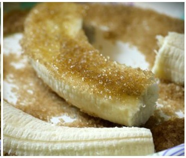
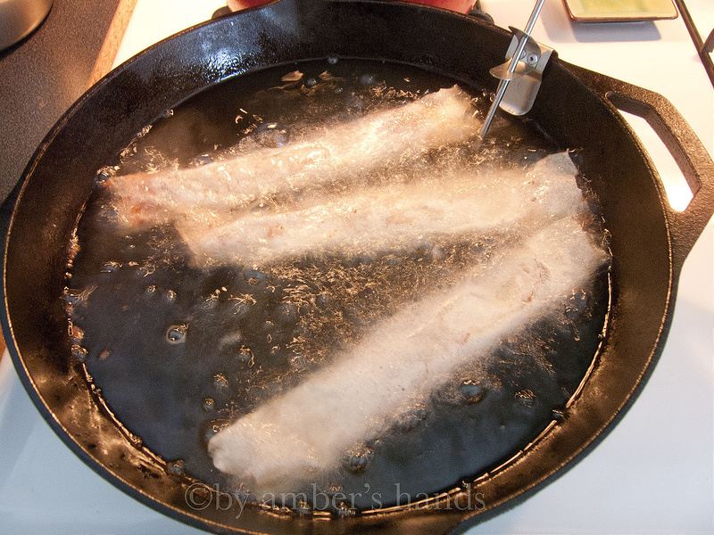
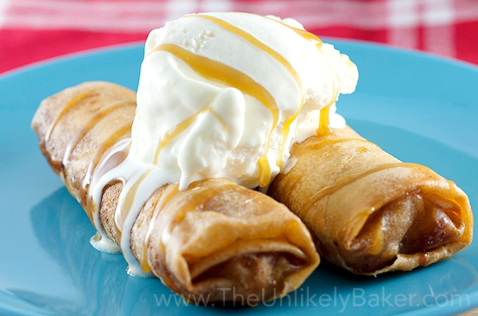

Banana Lumpia



Pictues of the Lumpia Cooking Process
- The first part of making a great banana lumpia is getting the right ingredients from the store. Personally, I really like using apple bananas because they are sweeter and are slightly harder so they stay together better during cooking. You also must make sure you have sugar, brown sugar, cinnamon (the better quality of cinnamon with taste so much better), and lumpia wrappers (which you can find in the store next to the frozen burritos or vegetables, it just depends on the store). You will also need a sharp knife as bananas can get stuck to your knife and ultimately rip the banana apart and a cutting board. I will cut on the cutting board and just wrap the lumpia on the countertop.
- After getting all the ingredients and utensils you will need, you can begin preparing your dessert. Begin by slicing all of your bananas in half the long way, and be careful that you leave the banana intact and don’t accidently rip it apart. After the bananas have been cut you can start to dip each banana into the sugar-cinnamon mixture. Just drop the banana into the pan of sugary goodness and ensure you cover the entire banana by sprinkling sugar and then patting it gently so the sugar sticks.
- The next step is a crucial step in the making process. You begin by placing the lumpia wrapper in a diamond shape with the point facing you. Then, you place one of the banana halves across the point closest to you. Begin wrapping up the lumpia by rolling it forward about half way, ensuring you keep the wrapper tight while rolling (this will ensure oil does not get inside your lumpia during cooking…you’ll thank me later). Now fold the excess lumpia wrapper on the left and right over-top of the banana, and then continue to roll the banana forward until it is fully wrapped. One key step is to wet the end point of the lumpia wrapper so that it will stick to itself and will not come unrolled, and counteracting all of your hard work.
- Once you have rolled all the bananas in their wrappers, you can begin cooking them. Usually I will us a cast iron pan and fill it about ¾ in full of vegetable oil. I place the heat on medium and let the oil get hot and testing it with one of the extra lumpia wrappers to ensure it will fry evenly. Once the oil is up to temperature, you can use thongs to place a few lumpia into the oil. They will only require 1-3 minutes on each side depending on the temperature of the oil. The key is to just let them begin to brown on each side, then pull them off because they will continue to cook once removed from the oil.
- It is essential to sprinkle some of the sugar-cinnamon mixture on top of the warm cooked lumpia and let it melt on the top of the crunchy shell. Once all your banana lumpia’s are cooked, wait a little while until they are cool enough (because the inside will remain extremely hot for quite some time). Once they have cooled you can enjoy the best part…eating your homemade banana lumpia! This is a delicious treat that can be eaten with a caramel glaze, a scoop of ice cream, or simply plain. Enjoy!